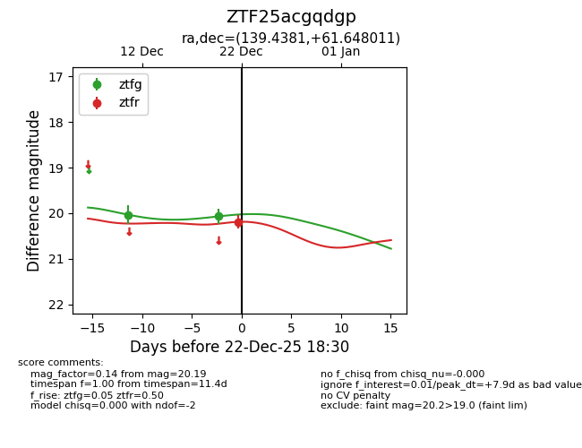
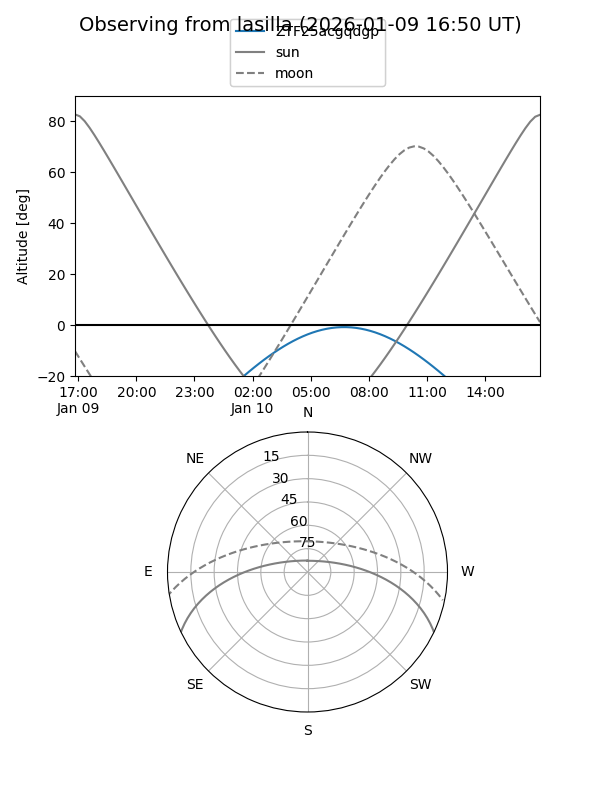
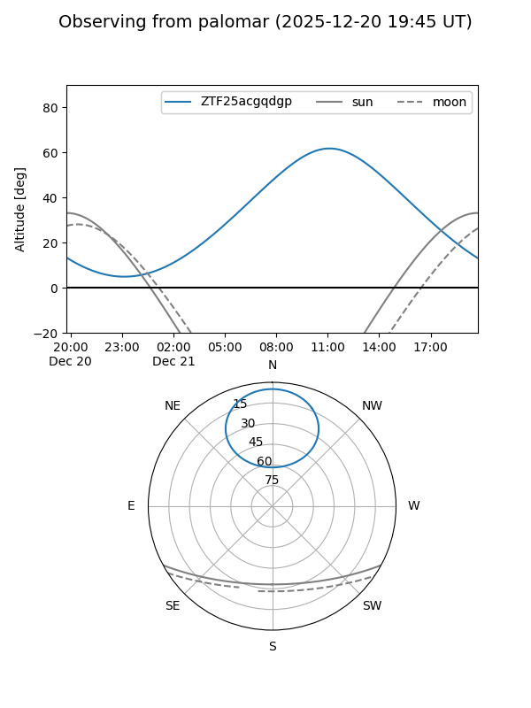
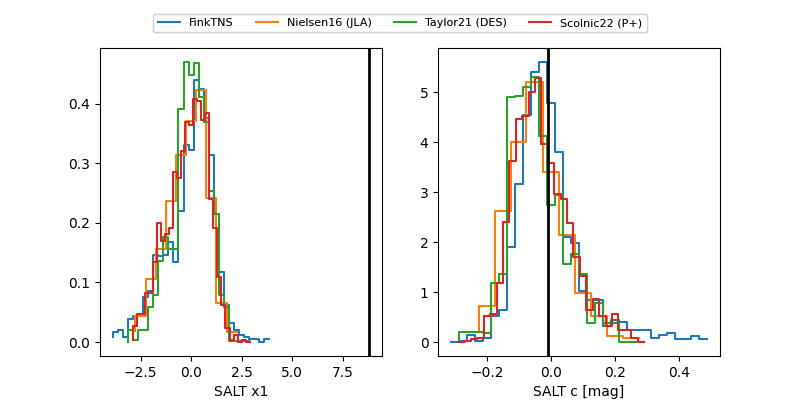

ZTF25acgqdgp
Target ZTF25acgqdgp at 2025-12-22 14:06
Aliases and brokers:
FINK: fink-portal.org/ZTF25acgqdgp
Lasair: lasair-ztf.lsst.ac.uk/objects/ZTF25acgqdgp
ALeRCE: alerce.online/object/ZTF25acgqdgp
alt names
ZTF25acgqdgp (ztf,fink_ztf)
Coordinates:
equatorial (ra, dec) = 139.4381,+61.64801
equatorial (HMS+DMS) = 09:17:45.15,+61:38:52.84
galactic (l, b) = (153.1716,+40.77962)
Flags:
Photometry:
last ztfg=20.07
2 ztfg detections
Lightcurve

Visibility


Additional plots
